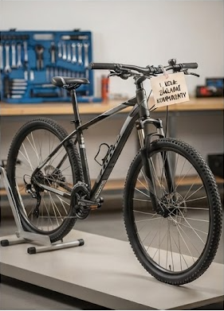

Vítejte ve světě cyklistiky
Správná cyklistika pro začátečníky může být skvělou cestou ke zlepšení fyzické kondice. Jízda na kole přináší radost z pohybu v přírodě a novou svobodu na cestách.
Ať už se chystáte na lesní stezky nebo zpevněné cyklostezky, důležité je začít pozvolna a užít si každou chvíli v sedle.

Základní vybavení na kolo
Než vyrazíte na svou první trasu, ujistěte se, že víte, co všechno budete na cestě bezpodmínečně potřebovat k bezpečné jízdě:
- Cyklistická přilba – nejdůležitější prvek ochrany zdraví.
- Láhev s pitím – pro správné dodržování pitného režimu.
- Základní nářadí – pro případ nečekaného defektu duše.
Interaktivní checklist na výlet
Kliknutím na položku si můžete zkontrolovat, co už máte připravené: